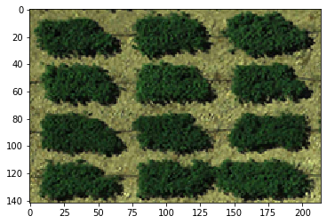
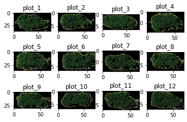

[1]:
# import PyShp
import shapefile
[2]:
# load shapefile and get record
file_sp = shapefile.Reader("GRID.shp")
[3]:
# list attributes
file_sp.fields
[3]:
[('DeletionFlag', 'C', 1, 0),
['var', 'C', 20, 20],
['row', 'N', 10, 10],
['col', 'N', 10, 10],
['area_all', 'N', 10, 10],
['area_veg', 'N', 10, 10],
['NDVI', 'N', 10, 10],
['NDVI_std', 'N', 10, 10],
['GNDVI', 'N', 10, 10],
['GNDVI_std', 'N', 10, 10],
['CNDVI', 'N', 10, 10],
['CNDVI_std', 'N', 10, 10],
['RVI', 'N', 10, 10],
['RVI_std', 'N', 10, 10],
['GRVI', 'N', 10, 10],
['GRVI_std', 'N', 10, 10],
['NDGI', 'N', 10, 10],
['NDGI_std', 'N', 10, 10],
['ch_0', 'N', 10, 10],
['ch_0_std', 'N', 10, 10],
['ch_1', 'N', 10, 10],
['ch_1_std', 'N', 10, 10],
['ch_2', 'N', 10, 10],
['ch_2_std', 'N', 10, 10],
['cluster_0', 'N', 10, 10],
['cluster_0_', 'N', 10, 10],
['cluster_1', 'N', 10, 10],
['cluster_1_', 'N', 10, 10],
['cluster_2', 'N', 10, 10],
['cluster_2_', 'N', 10, 10],
['cluster_3', 'N', 10, 10],
['cluster_3_', 'N', 10, 10]]
[4]:
# demo with the first record
records = file_sp.shapeRecords()
first_plot = records[0]
[5]:
# polygon coordinates
first_plot.shape.points
[5]:
[(1153.5487982819586, 154.80525925556415),
(1222.2592755806982, 159.82284445357462),
(1203.8125387566886, 194.30747345836616),
(1135.102061457949, 189.2898882603557)]
[6]:
# attributes (exact the same as ones from the csv output)
first_plot.record
[6]:
Record #0: ['325', 0.0, 0.0, 2584.0, 1359.0, 0.23869822, 0.12908907, nan, nan, 0.14441162, 0.07516949, 1.69628965, 0.47877022, 0.99999999, 0.0, 0.23869822, 0.12908907, 36.2281089, 23.588658, 54.5069904, 22.4681228, 29.9830757, 14.3784804, 1.0, 0.0, 1.0, 0.0, 1.0, 0.0, 1.0, 0.0]
[10]:
import matplotlib.pyplot as plt
import os
import numpy as np
[13]:
data = np.load("GRID3_image.npy")
[15]:
data.shape
[15]:
(142, 214, 3)
[16]:
plt.imshow(data)
[16]:
<matplotlib.image.AxesImage at 0x7f94a9e195d0>

[17]:
os.listdir()
[17]:
['GRID3.grid',
'demo_shapefile.ipynb',
'GRID3_image.npy',
'GRID3_raw.png',
'GRID3_data.csv',
'GRID3_seg_ID.png',
'GRID.shx',
'.DS_Store',
'GRID.shp',
'GRID3_kmeans.png',
'GRID.dbf',
'GRID3_kmeans_border.png',
'GRID3_raw_centroid.png',
'GRID3_kmeans_both.png',
'GRID3_seg_both.png',
'GRID3_bin_centroid.png',
'GRID3.h5',
'GRID3_raw_both.png',
'GRID3_raw_border.png',
'GRID3_kmeans_centroid.png',
'.ipynb_checkpoints',
'GRID3_seg_centroid.png',
'GRID3_bin.png',
'GRID3_bin_border.png',
'GRID3_seg_border.png',
'GRID3_seg.png',
'GRID3_bin_both.png']
[18]:
import h5py as h5
[53]:
# read h5 file in read mode
f = h5.File("GRID3.h5", "r")
ids = list(f.keys()); ids
[53]:
['259',
'260',
'263',
'291',
'293',
'296',
'325',
'328',
'329',
'C10',
'C11',
'C12']
[93]:
# plot the first 9 segmented plots
row = 3; col = 4
# plt.figure(figsize = (10, 5), dpi=300)
for i in range(row * col):
img = f.get(ids[i])
plt.subplot(row, col, (i + 1))
plt.title("plot_%d" % (i + 1))
# plt.subplots_adjust(top=1)
plt.imshow(img)
plt.show()

agd
[ ]:
[ ]: